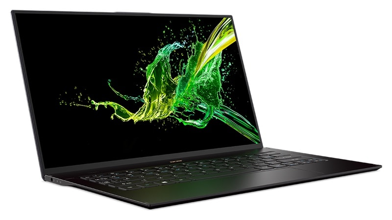

acerswift1
As far as specifications go, the Acer Swift 7 has an 8th Gen Intel Core i7-8500Y Amber Lake processor, up to 512GB of SSD storage, and up to 16GB RAM. The base variant has 256GB SSD storage and 8GB RAM, and is priced at $1,699 (roughly Rs. 1.19 lakh) in the US. The Acer Swift 7 will be available in China, Europe, Middle East, and Africa in April 2019 and in the US from May.